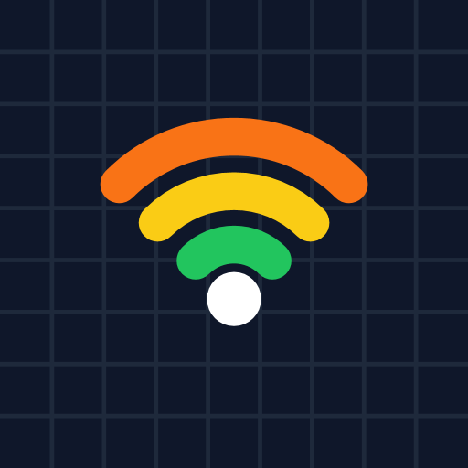
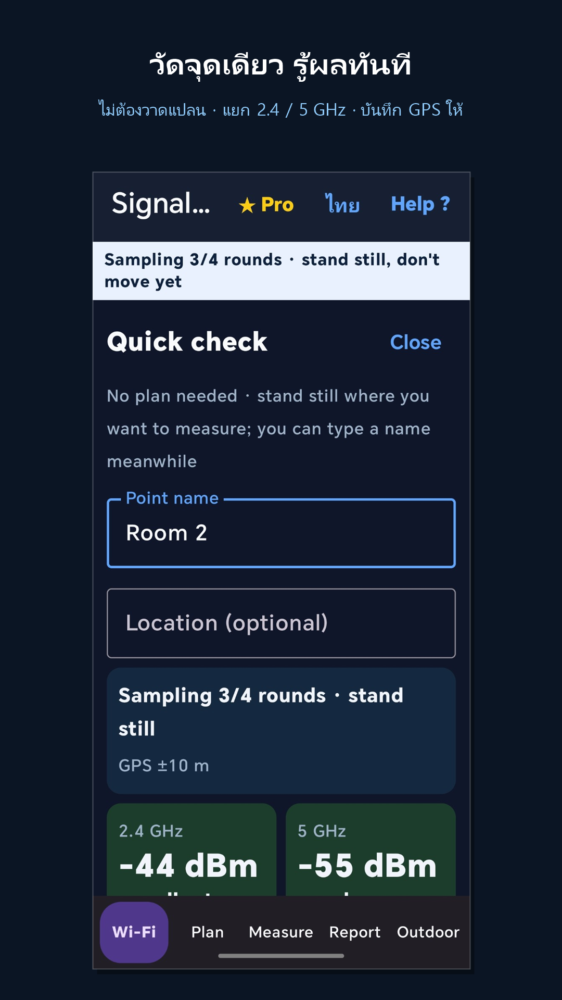
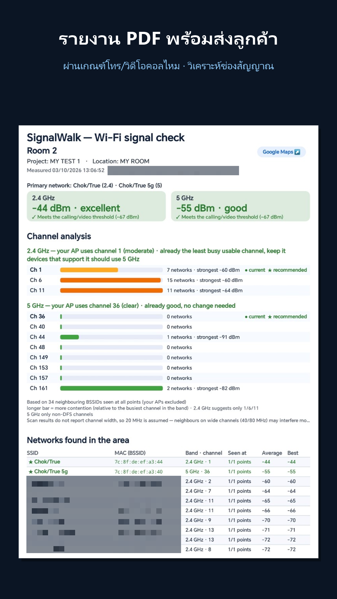
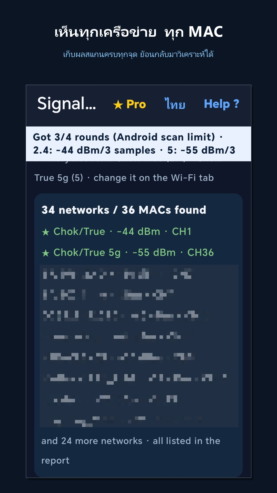
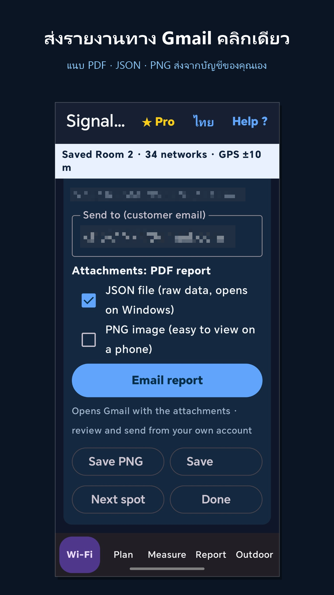

สำรวจสัญญาณ Wi‑Fi ทีละจุด ทำ heatmap หาตำแหน่ง AP แล้วส่งรายงาน PDF ให้ลูกค้า จบในมือถือเครื่องเดียว Measure Wi‑Fi spot by spot, build heatmaps, locate access points and email your customer a PDF report — all from one phone.
ส่งอีเมลถึง signalwalk.app@gmail.com
บอก Gmail ที่ใช้กับ Play Store บนมือถือ รุ่นมือถือ และงานที่ทำ (เช่น ช่างไอที ช่างติดตั้งเน็ต เจ้าของร้าน) แล้วผู้พัฒนาจะส่งลิงก์ติดตั้งให้
Email signalwalk.app@gmail.com
with the Gmail address you use for the Play Store, your phone model and what you do (IT tech, installer, shop owner…), and you'll get an install link.
กำลังทดสอบบน Google Play · Android 8.0 ขึ้นไป In testing on Google Play · Android 8.0 or later




ออกแบบสำหรับช่างไอที ผู้ติดตั้งเครือข่าย และเจ้าของสำนักงานหรือร้านค้า Built for IT technicians, network installers and office or shop owners.
ยืนตรงจุดที่ลูกค้าบ่น กดปุ่มเดียว รู้ทันทีว่า 2.4 และ 5 GHz แรงแค่ไหน ผ่านเกณฑ์โทร/วิดีโอคอล (−67 dBm) หรือไม่
Stand where the customer complains and tap once: see 2.4 and 5 GHz strength and whether it meets the −67 dBm target for calls and video.
วาดแปลนหรือนำเข้าภาพแปลน เดินวัดหลายจุด เห็นสัญญาณทั้งพื้นที่ พร้อมเส้นระดับสัญญาณและตำแหน่ง AP ที่คำนวณได้
Sketch or import a floor plan, measure many points, and see coverage everywhere with contour lines and the estimated AP position.
ปักหมุดบน Google Maps หรือใช้ภาพดาวเทียมเป็นแปลน ผูกพิกัด 2 จุด แล้ววางจุดวัดตามพิกัดให้เอง
Pin points on Google Maps, or use a satellite image as the plan: link 2 points to GPS and measurements are placed automatically.
ดูว่าเพื่อนบ้านแย่งช่องไหน แล้วแนะนำช่องที่ว่างกว่า (2.4 GHz: 1/6/11 · 5 GHz: ช่องที่ไม่ใช่ DFS)
See which channels neighbours crowd and get a quieter recommendation (2.4 GHz: 1/6/11 · 5 GHz: non‑DFS).
เก็บหลายรอบต่อจุด นับเฉพาะค่าที่สแกนใหม่ จุดที่ค่าแกว่งหรือตัวอย่างน้อยจะถูกติดป้ายให้วัดซ้ำ
Several samples per point, fresh scans only. Points that fluctuate or have too few samples are flagged for re‑measuring.
PDF, PNG, CSV (Excel) และ JSON ส่งผ่าน Gmail พร้อมไฟล์แนบ มีลิงก์ Google Maps ของทุกจุด เลือกภาษาไทยหรืออังกฤษ
PDF, PNG, CSV (Excel) and JSON, emailed through Gmail with a Google Maps link for every point, in English or Thai.
ถือมือถือเดินตามลูกศร ▲ แรงขึ้น / ▼ อ่อนลง และเสียงบี๊บที่ถี่ขึ้นเมื่อเข้าใกล้ หา AP ที่ซ่อนบนฝ้าหรือหลังตู้
Walk with the phone following the ▲ stronger / ▼ weaker arrow and beeps that speed up as you get closer, to find APs hidden in ceilings or behind cabinets.
บอกผู้ผลิต AP จาก MAC ด้วยฐานข้อมูล IEEE ในเครื่อง และเตือนเมื่อ Wi‑Fi ชื่อเดียวกันมาจากหลายยี่ห้อ ซึ่งอาจเป็น AP ปลอมตั้งชื่อเลียนแบบ
Shows each AP's maker from its MAC using the on‑device IEEE registry, and warns when one Wi‑Fi name comes from several makers, a sign of a look‑alike fake AP.
รายงานจัดกลุ่ม MAC ของเครื่องเดียวกัน บอกว่าเราเตอร์แต่ละตัวปล่อย Wi‑Fi ชื่ออะไรบ้าง ทั้ง 2.4 / 5 GHz และเครือข่ายแขก
Reports group the MACs of one unit and list which Wi‑Fi names each router broadcasts, across 2.4 / 5 GHz and guest networks.
รายงาน PDF 3 หน้า จากการวัดในบ้านหลังหนึ่ง 1 จุด · แตะเพื่อดูภาพเต็ม A 3‑page PDF report from one spot in a house (Thai report language) · tap a page to see it full size
ในตัวอย่างนี้เบลอพิกัด GPS ชื่อ Wi‑Fi ของเพื่อนบ้าน และท้าย MAC ไว้ · รายงานจริงแสดงครบ พร้อมลิงก์ Google Maps GPS coordinates, neighbours' Wi‑Fi names and the end of each MAC are blurred in this sample · real reports show everything, with a Google Maps link
ใช้ฟรีได้เลย อัปเกรดเป็น Pro เมื่อต้องส่งงานลูกค้าในนามบริษัท Free to use. Upgrade to Pro when you deliver reports to customers under your company name.
ชำระผ่าน Google Play · ยกเลิกรายปีได้ทุกเมื่อใน Play Store Paid through Google Play · cancel the yearly plan anytime in the Play Store. Prices outside Thailand are shown in your local currency.